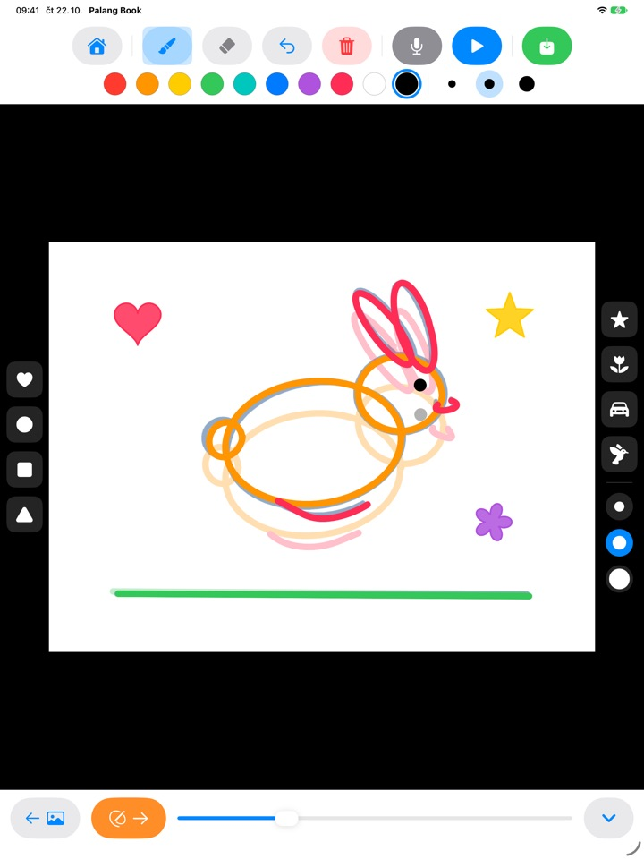
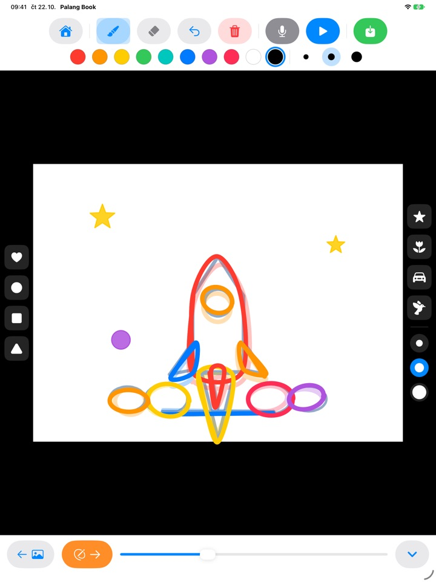
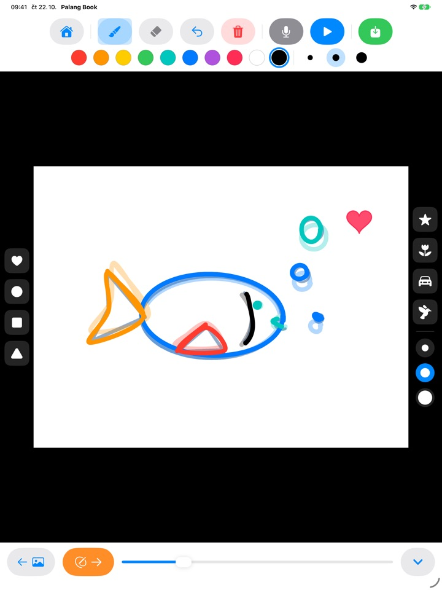
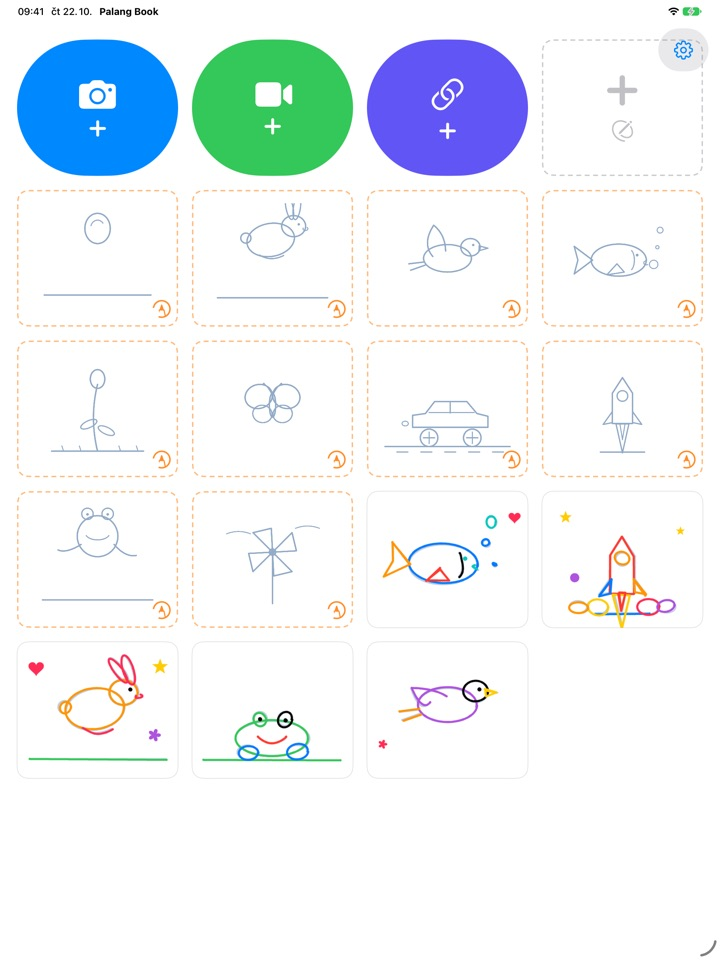

Obkresli obrázek
a sleduj, jak ožije
Dítě obkresluje světlý obrys, jednu stránku za druhou. Stiskněte přehrát a obrys zmizí, hýbou se jen čáry, které nakreslilo samo. Všechna tlačítka jsou obrázky, takže to zvládne i dítě, které ještě neumí číst.
Pro iPad. Tři sady k obkreslování jsou zdarma.

Nakreslete pár stránek
Něco nakreslete a klepnutím na oranžovou šipku přejděte na další stránku. Předchozí stránka slabě prosvítá. Po dvou nebo třech stránkách klepněte na modré tlačítko přehrát.
Škoda, aby povedená kresba jen tak stála, ne?
Animace znamená kreslit pořád skoro stejný obrázek s nepatrnými změnami a dítě samo neví, kde začít. Palang Book podloží světlý obrys, ve kterém už je pohyb připravený, a stačí jen jít po čáře. Jakmile dítě stiskne přehrát, jeho kresba se rozpohybuje.
Stačí jít po čáře a je z toho animace
Skákající míč, poskakující zajíček, letící ptáček, plavající rybka, rozkvétající květina, motýl, závodní auto, raketa, žába a větrník. Každá sada má asi 20 stránek s obrysy.
Předchozí stránka slabě prosvítá, takže se další kreslí snadno, a při přehrávání obrys zmizí a hýbe se jen kresba vašeho dítěte.

Razítka a deset barev
Jedním klepnutím se razí srdíčka, kruhy, čtverce, trojúhelníky, hvězdy, kytičky, autíčka a ptáčci. Razítka i štětce mají po třech velikostech a barev je deset.
Guma a krok zpět chyby hned spraví. Kreslí se prstem nebo Apple Pencilem.

Na vlastní videa i na prázdný papír
Přidejte video, které jste natočili, nebo video z Fotek a obkreslujte přímo přes něj. Když skryjete pozadí, přehrají se jen nakreslené scény, jedna po druhé na bílém papíru. Je tu i prázdný flipbook úplně bez obrysů.
Klepnutím na mikrofon nahrajete k animaci hlas dítěte a hotové dílo uložíte do Fotek jako video, které můžete poslat rodině.

Začít jde ve třech krocích
- 1
Klepněte na kartu s obrysem
Karty s oranžovým čárkovaným okrajem na úvodní obrazovce jsou k obkreslování.
- 2
Nakreslete a otočte
Oranžová šipka vás přenese na další stránku.
- 3
Stiskněte přehrát
Klepněte na modré tlačítko přehrát a kresba se rozpohybuje.
Co dělají tlačítka
- Oranžová čárkovaná karta
- Začít obkreslovat
- Šedá čárkovaná karta
- Prázdný flipbook
- Modrá kamera
- Kreslit přes video, které natočíte
- Zelené video
- Přidat video z Fotek
- Indigový odkaz
- Vložit odkaz na videosoubor
- Oranžová šipka
- Další stránka
- Modré přehrát
- Přehrát animaci, dalším klepnutím zastavit
- Zakřivená šipka
- Vrátit poslední čáru
- Červený koš
- Vymazat celou stránku (krok zpět ji vrátí)
- Mikrofon
- Nahrát hlas, zatímco se animace opakuje
- Ikona videa
- Skrýt pozadí videa (růžové proužky znamenají jen kresby)
- Zelené uložit
- Uložit do Fotek jako video
Dílo smažete tak, že na úvodní obrazovce podržíte jeho kartu. Smažou se s ním i kresby, nahrávka a přidané video.
Spoustu věcí vyzkoušíte zdarma. Když vás to chytne, je tu Doživotní přístup.
Zdarma
- 3 sady k obkreslování (míč, zajíček, květina)
- Uložení 3 děl
- Přidání 1 videa
- Prázdné flipbooky až na 10 stránek
- Nahrávání hlasu až 15 sekund
- Razítka, barvy, štětce a ukládání do Fotek
Doživotní přístup
- Všechny sady k obkreslování včetně budoucích
- Bez omezení počtu děl, stránek, videí i délky nahrávání
- Bez karty Palang Book na konci uložených videí
Jednorázový nákup, žádné předplatné. Díky Sdílení v rodině funguje na všech iPadech v rodině.
Videa uložená zdarma končí krátkou kartou Palang Book. Pokud jste Palang Book používali ještě před zavedením Doživotního přístupu, máte všechno odemčené.
Otázky
Jak fungují obrysy?
Světle modré čáry jsou obrys. Dítě po nich kreslí, a když stisknete přehrát, obrys zmizí a hýbou se jen jeho čáry. Asi po 20 stránkách je animace hotová.
Chci přehrát a uložit jen kresbu, bez videa.
V díle s videem klepněte na ikonu videa v horním panelu nástrojů, až zrůžoví a bude pruhovaná. Přehrávání i ukládání pak ukáže jen kresbu na bílém pozadí. Přehrají se jen nakreslené scény, takže pár kreseb přes dlouhé video dá krátkou animaci.
Kam se uloží hotové video?
Klepněte na zelené tlačítko uložení na pravém konci panelu a video mp4 se uloží do Fotek. Při prvním ukládání povolte přístup k fotkám.
Jak přidáme hlas?
Klepnutím na mikrofon spustíte nahrávání, zatímco se animace opakuje, a tlačítkem stop ho ukončíte. Nová nahrávka nahradí tu předchozí. Při uložení videa se hlas přidá.
Odkaz na video se neotevře.
Zkontrolujte připojení k internetu a ověřte, že adresa vede přímo na videosoubor (končí třeba na .mp4). Odkazy na stránky videoportálů otevřít nejde. Používejte vlastní videa nebo videa, která lze volně použít.
Dlaň pořád nechává stopy.
Zakřivená šipka odstraní poslední čáru a červený koš vymaže celou stránku (krok zpět ji vrátí). Pokud se to stává často, napište nám a pomůžeme.
Proč je před obrazovkou nákupu příklad na násobení?
Aby se děti k nákupu nedostaly samy. Když dítě klepne na něco zamčeného, objeví se velký zámek s nápisem „Ukaž to dospělému“ a obrazovka nákupu se otevře, až když dospělý vyřeší příklad na násobení.
Jak obnovím nákup?
Klepněte na ozubené kolečko vpravo nahoře na úvodní obrazovce, zvolte Doživotní přístup, odpovězte na otázku pro dospělé a klepněte na Obnovit nákupy. Musíte být přihlášeni stejným účtem Apple, kterým jste nakupovali.
Jak pošlu zpětnou vazbu z aplikace?
Klepněte na ozubené kolečko na úvodní obrazovce a zvolte Odeslat zpětnou vazbu. Můžete přiložit snímek obrazovky, a pokud chcete odpověď, nechte nám jméno a e-mail. Prosíme, ať zpětnou vazbu posílá rodič.
Sbíráte nějaké údaje o mém dítěti?
Ne. Palang Book nesbírá žádné osobní údaje a kresby i nahrávky zůstávají ve vašem iPadu. Podrobnosti najdete v Zásadách ochrany osobních údajů.
Máte otázku nebo potíž? Napište na mizzking75@gmail.com. Obvykle odpovídáme do 2 až 3 dnů.